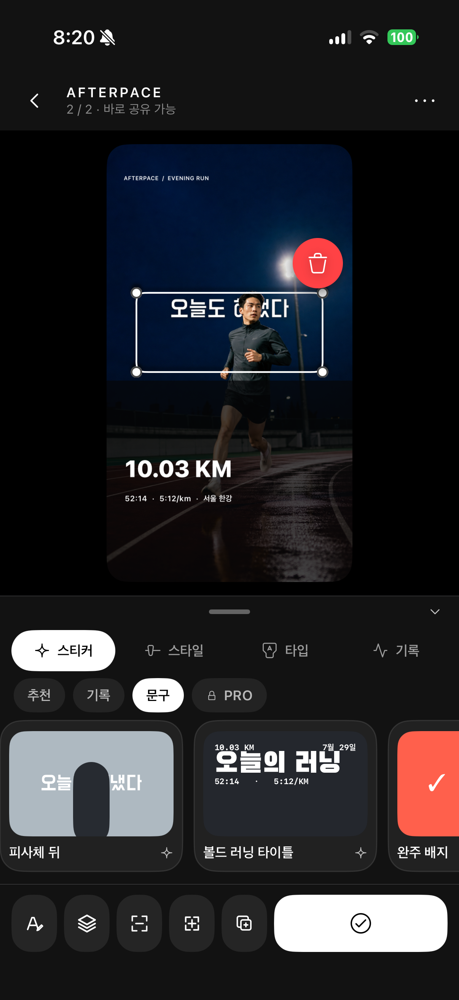
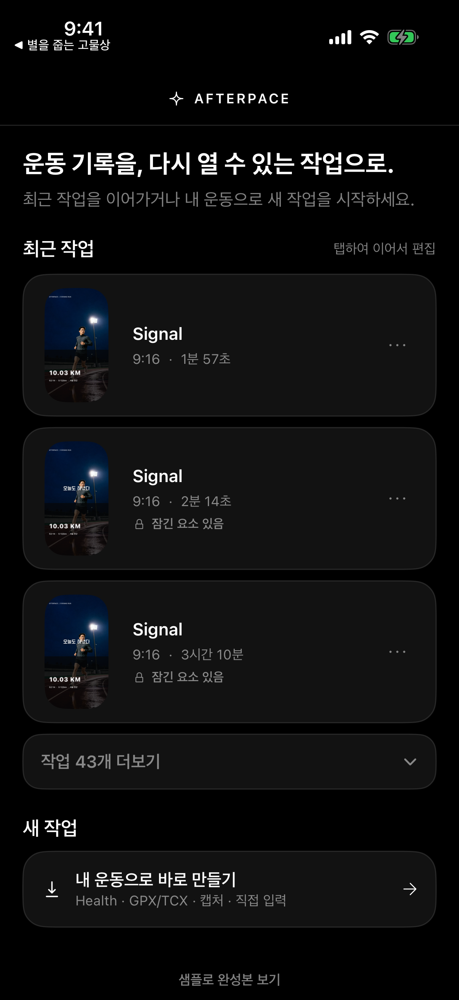
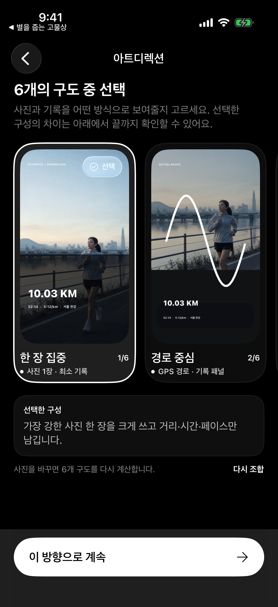
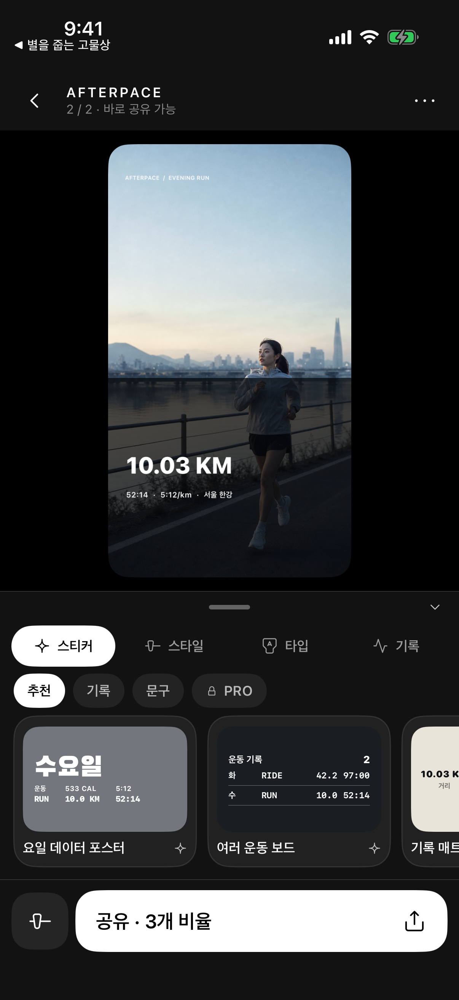
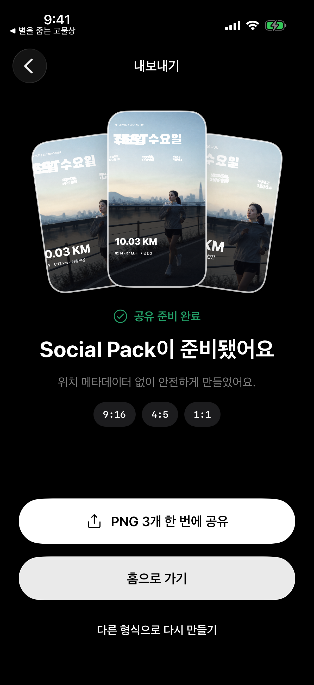

“운동을 마친 뒤 남는 건 거리와 시간이 아니라, 그날의 공기와 내가 해냈다는 감각이었다.”
그래서 기록과 사진을 다시 하나의 장면으로 엮었습니다.PRIVATE · ON DEVICE · MADE TO SHARE
한 번의 운동을, 공유할 장면으로.
운동과 사진을 고르세요. AFTERPACE가 기록을 읽고, 여섯 개의 아트 디렉션과 Story·Feed·Square를 한 번에 완성합니다.
- ⌁Apple Health
- ◎로컬 우선
- ▰3개 비율

WHY AFTERPACE
기록은 숫자로 끝나지 않으니까.
기존 운동 앱의 결과 화면은 정확하지만 모두 비슷했습니다. 사진 편집 앱은 자유롭지만 매번 빈 캔버스에서 시작해야 했습니다.
AFTERPACE는 그 사이를 잇습니다. 운동의 맥락을 이해하고 사진을 추천한 뒤, 수동 편집보다 먼저 완성도 높은 방향을 제안합니다. 빠르게 끝내고 싶으면 Quick Edit, 마지막 1%가 필요하면 Fine Edit를 사용합니다.
01UI는 조용하게
결과물은 강하게
결과물은 강하게
02허락받은 데이터만
기기 안에서
기기 안에서
03한 번 만든 작품은
언제든 다시
언제든 다시
SIX REAL DIRECTIONS
스티커를 고르기 전에,
먼저 분위기를 고르세요.
같은 운동과 사진도 완전히 다른 여섯 장면이 됩니다. 단순한 색상 변형이 아니라 레이아웃, 사진 비중, 기록의 위계와 여백이 달라집니다.



FROM WORKOUT TO ART
필요한 순간마다 정확한 도구만.
01
운동은 한 번만 연결.
Apple Health에서 운동을 가져오고, GPX·TCX·OCR·직접 입력으로 빈틈을 채웁니다. 권한은 연결을 누른 뒤에만 요청합니다.
02
그 시간의 사진을 먼저.
운동 전후의 사진을 찾아 선명도, 인물, 구도와 중복을 살펴보고 어울리는 컷을 추천합니다.
03
대부분은 Quick Edit로 충분하게.
사진, 기록, 경로, 문구와 라이브 스티커를 탭 몇 번으로 바꿉니다. 피사체 뒤로 보내는 깊이 효과도 한 동작입니다.
04
Studio는 마지막 1%를 위해.
내용·모양·배치, 세 범위만 제공합니다. Lock은 스티커 전체를 실제로 보호하고 언제나 해제할 수 있습니다.
05
만든 것은 사라지지 않게.
프로젝트, 사진, 레이어, 잠금과 배치를 기기에 저장합니다. 라이브러리에서 다시 열어 이어서 편집하세요.
06
러닝만이 아닌 오늘의 움직임.
러닝, 걷기, 사이클링과 HYROX의 서로 다른 기록 구조를 이해해 알맞은 정보 위계를 만듭니다.

ONE PROJECT · THREE CANVASES
한 번 만들고,
어디에나 맞게.
Story 9:16, Feed 4:5, Square 1:1을 한 번에 렌더링합니다. 단순 크롭이 아니라 각 비율에 맞춰 구성 요소를 다시 배치합니다.
9:16 STORY4:5 FEED1:1 SQUARE
PRIVATE BY CONSTRUCTION
운동의 흔적은
당신의 기기 안에.
계정 없이 시작하고, Health와 사진은 사용자가 허용한 뒤 기기 안에서 처리합니다. 공유 옵션 또는 Privacy Guard에서 출발·도착 경로, 장소와 심박수 공개 여부를 확인할 수 있습니다.
- ✓광고 추적과 건강 데이터 마케팅 없음
- ✓프로젝트와 원본 사진의 로컬 저장
- ✓언제든 시스템 설정에서 권한 철회
COMING TO iPHONE & iPAD
다음 운동은,
남기고 싶은 장면이 됩니다.
App Store 페이지가 공개되면 아래 버튼에서 바로 확인할 수 있습니다.